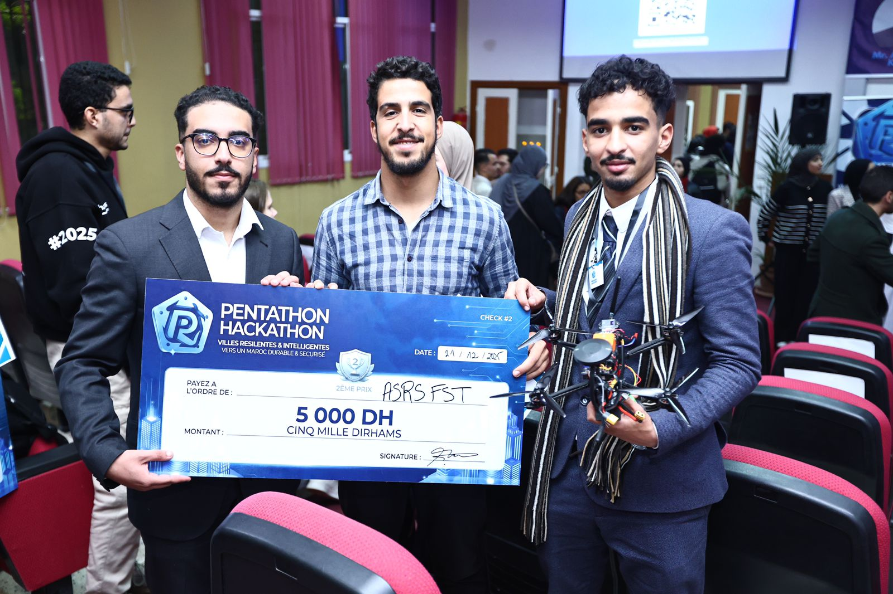
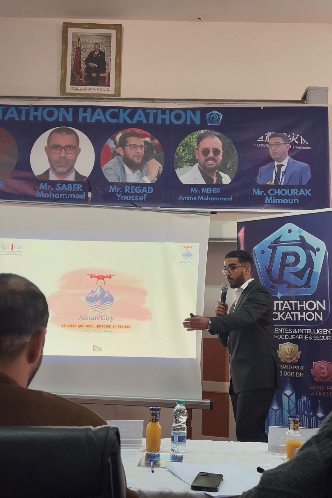
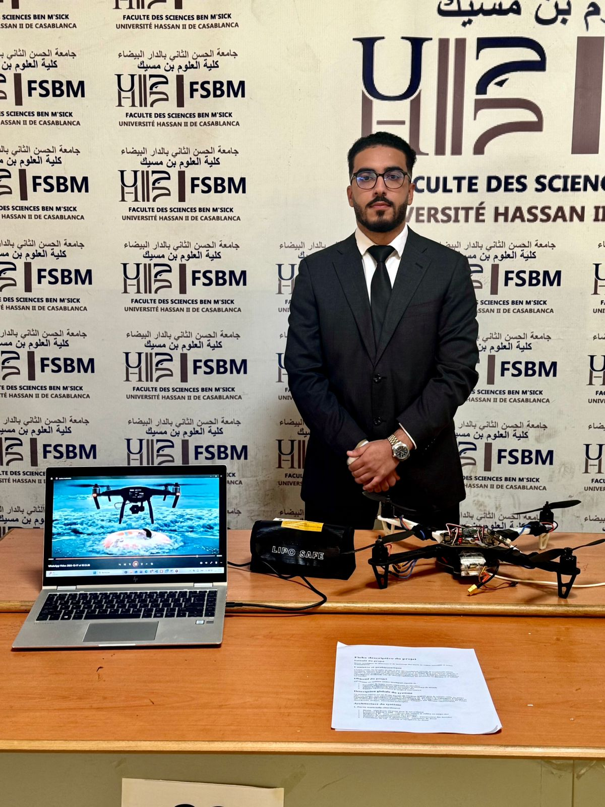
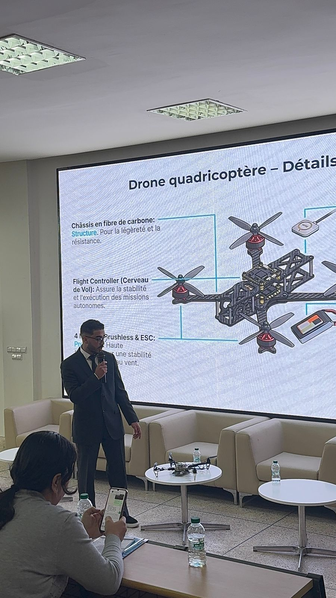

Robotique Aérienne
Drone AMANE
1er Prix FS Ben M'sik
2ème Prix ENSA Oujda
Drone autonome multiservice conçu pour l'intervention en zones sinistrées (inondations, séismes). Une innovation vitale pour l'accès aux zones isolées.
- Sauvetage : Système de largage précis de bouées ou médicaments.
- Vision IA : Détection thermique des victimes via OpenCV.
- Architecture : Flight Controller Pixhawk couplé à une Raspberry Pi.
Pixhawk 4
Python
OpenCV
3D Print




